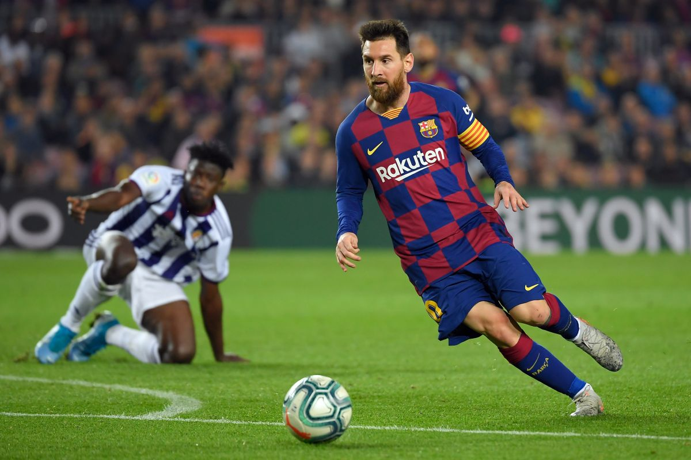

Messi is regarded by many as one of the best player's of all time.He plays for FC Barcelona and Argentina.
He is known for his close-control and amazing dribbling skills.He lives in Barcelona,Spain.Messi is married to
his childhood-love Antonella Rocuzzo and has 4 kids.His age is 34.One of the biggest void in his trophy cabinet is
the World Cup,he has won everything except for that one thing.
See the below image to know more!!

STATS
ALL TIME
APPS: 856
GOALS: 697
ASSISTS: 289
CLUB
APPS : 718
GOALS: 627
ASSISTS: 247
COUNTRY
CAPS : 138
GOALS : 70
ASSISTS : 42
ABOUT US
Newsroom
Oppurtunities
Contact us
Enrollment
Membership